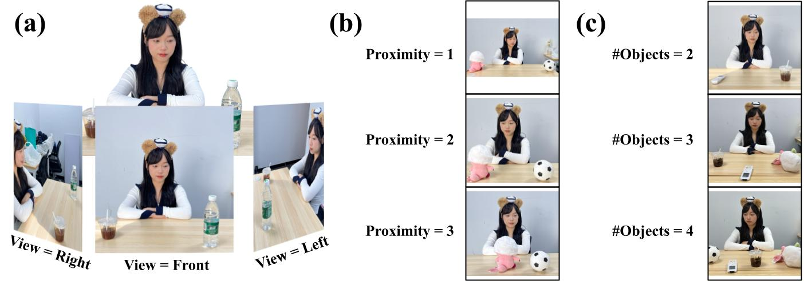

Controlled Study

Controlled Variables: Systematic manipulation of View (left/right/front), Proximity (1-3 scale), #Objects (2-4), Objects (18 combinations of 9 items), and Gazer (2 actors) across 900 test stimuli. Subfigure (c) depicts stimuli with different numbers of objects on the table (with a Proximity value of 2). The gazer here is actor X.

The gazer is actor Y.